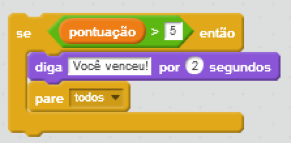
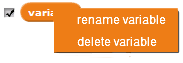

Informa o valor da variável

Para ver o valor da variável, clique na caixa de seleção ao lado do bloco.
Clique com o botão direito do mouse no readout para obter diferentes visualizações: 
Para excluir ou renomear uma variável, clique com o botão direito do mouse sobre a variável.
